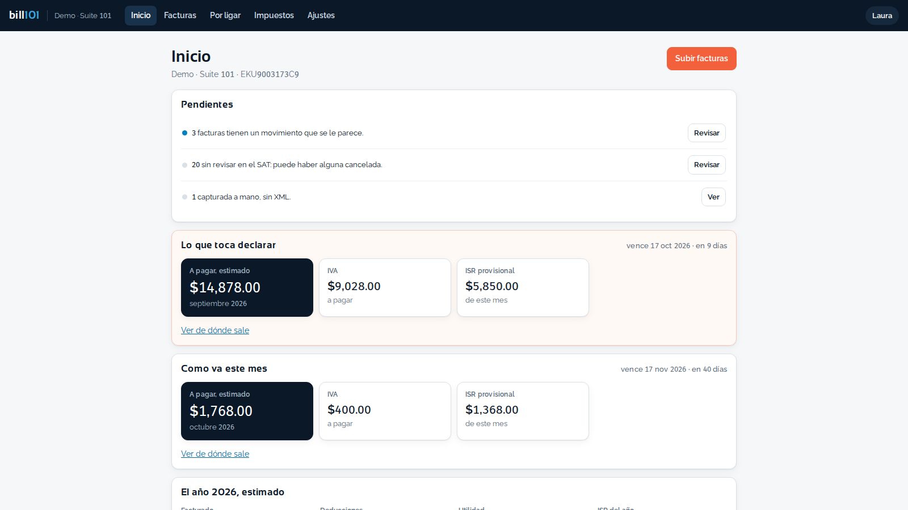
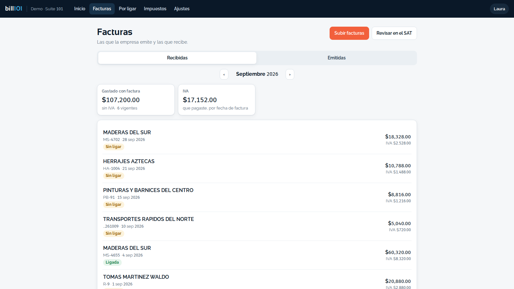
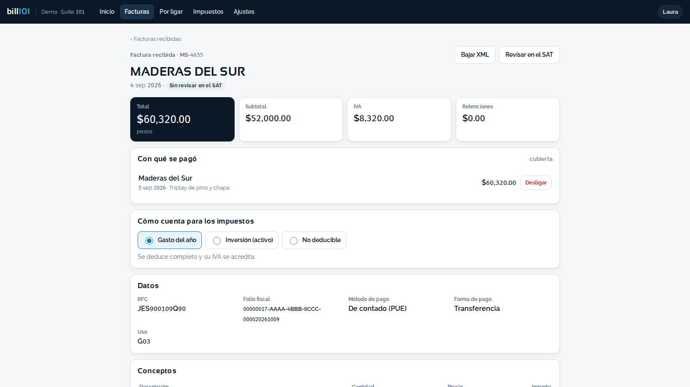
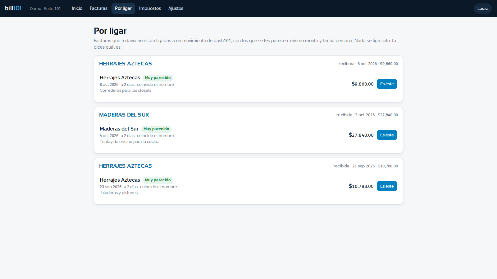
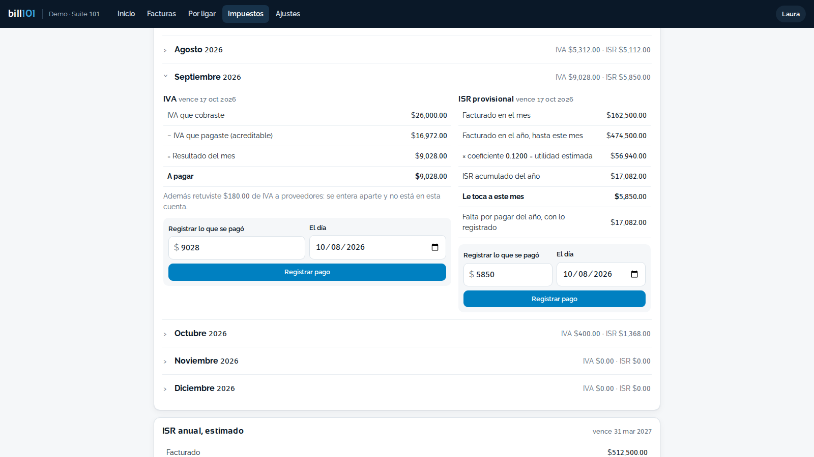
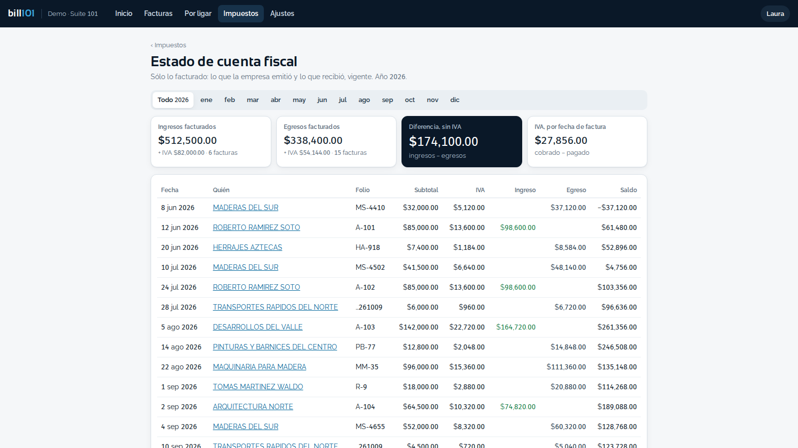
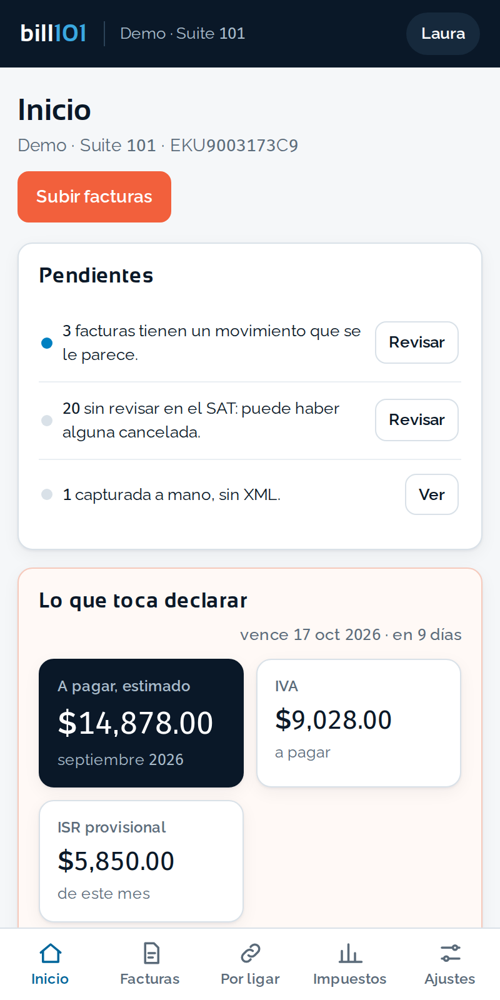

Las facturas de la empresa, leídas solas, y los impuestos del mes, estimados.
En producción · Web · computadora y celular

Se suben los XML de las facturas —sueltos o en un .zip— y bill101 los lee solo: quién la hizo, a quién, cuánto, qué IVA y si la empresa la emitió o la recibió. A cada factura le propone el movimiento de dash101 que se le parece, y alguien de la empresa confirma. Le pregunta al SAT si siguen vigentes. Con lo facturado arma el estado de cuenta fiscal y estima el IVA y el ISR provisional de cada mes y el ISR del año. Es una estimación para llegar preparado con el contador: no es la declaración.
Por qué sirve
El XML ya trae el RFC, los importes, el IVA y las retenciones: se sube y queda leído. La misma factura subida dos veces no se duplica.
Para cada factura propone el movimiento de dash101 con el mismo monto y fecha cercana, y dice por qué se parece. Nada se liga solo.
El inicio dice cuánto IVA e ISR provisional se estima, cuándo vence y de dónde sale cada número.
El estado de cuenta fiscal lleva lo emitido y lo recibido, vigente, con su saldo corrido, aparte de las cuentas del día a día.
Gasto del año, inversión o no deducible: se escoge en la factura y la estimación lo toma en cuenta.
Quien ve el dinero de la empresa puede consultar; los datos fiscales y los pagos de impuestos sólo los cambia quien dirige o quien lleva la contabilidad.
Las facturas recibidas del mes, con su IVA y si ya se ligaron a un pago

Una factura: con qué se pagó, cómo cuenta para los impuestos y sus datos

Por ligar: cada factura con el pago de dash101 que se le parece

Un mes abierto: de dónde salen el IVA y el ISR provisional estimados

El estado de cuenta fiscal: sólo lo facturado, con su saldo corrido

El inicio, desde el celular

Qué trae
Qué no hace
Se dice de una vez, porque vender lo que no existe sale caro.
¿Le sirve a tu taller?
Te enseñamos bill101 con datos de una obra de verdad.